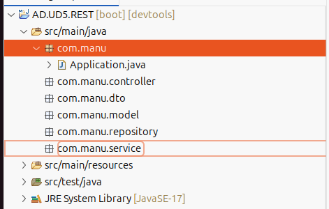
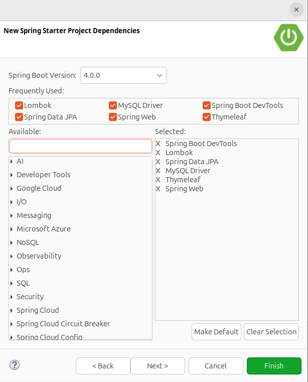

3 API Rest
1. Niveles (capas) de Spring
Estamos aprendiendo sobre algunos patrones de diseño que vamos a utilizar en nuestra aplicación, y que son necesarios para definir una arquitectura correcta en una aplicación Spring. Por tanto, lo primero que haremos es definir las capas de la estructura de nuestra aplicación, y una vez las definimos, definiremos nuevos patrones de diseño que integraremos en nuestra aplicación.
La idea es crear una estructura de paquetes que agrupe a las clases en 6 paquetes principales: paquete que contiene la clase principal, capa web que contiene los controladores, capa de acceso a datos que contiene el repositorio, capa de servicio, capa de modelo de datos y capa dto. Todos ellos están incluidos, básicamente en 3: web, servicio y repositorio.
El objetivo es que, con una arquitectura bien definida y ensamblada, sea posible utilizar la Inyección de Dependencias, ya que facilitará la comunicación y el acceso entre las diferentes capas.
1.1. Clase Main
Cada aplicación Java debe contener una clase principal con un método main. Este método, en caso de implementar una aplicación con Spring, debe llamar al método run de la clase SpringApplication. Dejaremos esta clase en la raíz por defecto, de modo que siempre la tendremos en el mismo sitio.
1.2. Capa Web. Capa de Controladores
Ahora vamos a definir el comportamiento de la aplicación implementando el resto de las clases. Comenzaremos con la capa de más alto nivel, la capa de controladores, donde expondremos los servicios de la aplicación. En nuestra aplicación se llamará Controller.
Esta capa básicamente contendrá 3 partes:
- Servicios web consumidos por aplicaciones (servicio REST o SOAP).
- Vistas implementadas con JSP, JSF, Thymeleaf, etc. Éste es nuestro caso principal, aunque también crearemos servicios REST.
- Vistas con frameworks como Vaadin, Wicket, ZK, etc.
1.3. Capa de Servicios
Capa que se encarga de implementar la lógica de negocio, esto es, todas las tareas que nuestro sistema es capaz de realizar. Es la elaboración de lo que ofrece el controlador.
Ésta es una de las capas más importantes ya que aquí se llevarán a cabo todas las operaciones de validación de datos que hacen referencia a la lógica de negocio (por ejemplo, comprobar que una cuenta corriente tiene saldo al realizar un pago) y la seguridad. Se llamará service.
Normalmente, acceden a los datos almacenados en la base de datos de la aplicación a través de los repositorías, realizan una serie de operaciones y envían los datos al controlador. Podemos encontrar los siguientes tipos de servicio:
- Servicios de Integridad de Repositorios: se encargan de consumir información del repositorio. Son servicios fáciles de implementar (por ejemplo, solicitar una lista de clientes).
- Servicios de Operabilidad de Negocio: realizan operaciones específicas para el flujo de negocio (realizan operaciones complejas para completar una transacción, como una venta, almacenar un pedido, etc.).
- Servicios de Seguridad: dedicados a realizar operaciones de seguridad.
- Servicios de Gestión: dedicados a generar informes y/o estadísticas.
1.4. Capa de Repositorio
Los repositorios son las clases encargadas de gestionar el acceso a los datos. Normalmente contienen clases que realizan operaciones CRUD utilizando sólo una clase de entidad de un modelo de dominio. Se llamará repository. Pueden contener operaciones de dos modelos.
1.5. Capa de Modelo
Contendrá los mapeos de las tablas de la base de datos en clases que representan entidades. La capa se llamará modelo.
1.6. Capa DTO
Los controladores normalmente gestionan DTO en lugar de pojos o beans, debido a la estructura de la API o la representación en vistas. Por tanto, necesitaremos implementar una conversión bidireccional entre un pojo y un modelo DTO. Más adelante definiremos, en los patrones de diseño, qué es un DTO y veremos la conversión bidireccional, llamada mapeo. Además, estos DTO estarán en una capa separada llamada dto.

2. Patrones de Diseño
Un patrón de diseño es una solución probada que resuelve un tipo específico de problema de diseño en el desarrollo de software. Existen muchos patrones de diseño que se dividen en categorías, por ejemplo: creación, estructural, comportamental, interacción, etc.
¿Por qué utilizar patrones de diseño?: Permiten tener el código bien organizado, legible y mantenible, también permiten reutilizar código y aumentan la escalabilidad en tu proyecto.
En sí mismos proporcionan una terminología estándar y un conjunto de buenas prácticas en lo que respecta a la solución de problemas de desarrollo de software.
Vamos a explicar varios para empezar a entender qué son los patrones de diseño.
2.1. Patrón MVC.
Ya hemos explicado este patrón en el tema anterior, pero le realizaremos una pequeña revisión.
Permite separar una aplicación en 3 capas, una forma de organizar y hacer un proyecto escalable. Las capas que podemos encontrar son:
- Modelo: Esta capa representa todo lo que tiene en ver con el acceso a datos: guardar, actualizar, obtener datos, así como todo el código de la lógica de negocio, básicamente las clases Java y parte de la lógica de negocio.
- Vista: La vista tiene que ver con la presentación de datos del modelo y lo que el usuario ve, normalmente una vista es la representación visual de un modelo (POJO o clase Java). Por ejemplo, el modelo de usuario, que es una clase en Java y cuyas propiedades son nombre y apellido, debe pertenecer a una vista en la que el usuario final ve estas propiedades.
- Controlador: El controlador se encarga de conectar el modelo con las vistas, funciona como un puente entre la vista y el modelo, el controlador recibe eventos generados por el usuario desde las vistas y se encarga de dirigir la solicitud respectiva al modelo. Por ejemplo, el usuario quiere ver a los clientes con el apellido Álvarez, la solicitud va al controlador y éste se encarga de utilizar el modelo adecuado y devolver ese modelo a la vista.
En ningún momento la vista interactuará directamente con el modelo, lo que también mantiene la seguridad en una aplicación.
Lo importante de este patrón es que permite dividirlo en partes, que son de algún modo independientes, así que si, por ejemplo, se hace un cambio en el modelo, no afectaría a la vista o si hay un cambio, sería mínimo.
2.2. Patrón DTO.
Con este patrón se diseña una de las capas transversales de la arquitectura. Soluciona el problema de cómo permitir a un cliente intercambiar datos con el servidor sin realizar múltiples llamadas pidiendo cada pieza de dato. Por ejemplo, si tenemos una entidad llamada Persona y una entidad llamada Direcciones, cuando pedimos las personas y sus direcciones debemos realizar múltiples llamadas al servidor para pedir las personas y las direcciones de cada persona, construyendo la vista con esta información.
El DTO lo soluciona pasando un objeto ligero al cliente con todos los datos necesarios, juntos. El cliente puede entonces hacer peticiones locales en el objeto que ha recibido.
Para ello, se crean clases Java que encapsulan los datos en un paquete que se puede transportar por la red (pueden implementar java.io.Serializable, aunque no es obligatorio), es decir, con el ejemplo anterior, crearíamos una clase Java que llevaría a la persona y sus direcciones, junto con el mismo objeto.
Estos objetos se utilizan en todas las capas de la aplicación, por lo que la información se lleva por todas las capas de la aplicación. Se recomienda llenar siempre todos los campos del DTO para evitar errores de NullPointerException (una cadena vacía puede ser mejor), hacer que los DTO sean autodescriptivos, utilizar arrays o colecciones de DTO cuando sea necesario, y considerar métodos que sobreescriban equals().
Hay dos variantes de DTO's:
- DTOs personalizados que representan parte de un bean o agrupan múltiples beans.
- DTOs de dominio llamados "entidades". Una clase de dominio no es directamente accesible por el cliente, ya que debido a la separación del patrón MVC de la vista, las entidades que mapean la base de datos (que son las entidades) no pueden ser accedidas. Por esta razón, se realizan copias DTO de los objetos de dominio del servidor (entidades). Los clientes pueden operar sobre copias locales mejorando el rendimiento de lectura y actualización.
Con todo ello, podemos resumir que el DTO es un patrón muy efectivo para transmitir información entre un cliente y un servidor, puesto que nos permite crear estructuras de datos independientes de nuestro modelo de datos (Entidades), lo que nos permite crear tantas "vistas" como sea necesario. A partir de un conjunto de tablas o fuentes de datos. Además, nos permite controlar el formato, nombre y tipos de datos con los que transmitimos los datos para ajustarnos a un determinado requisito. Por último, si por alguna razón el modelo de datos cambia (y con él las entidades) el cliente no se verá afectado, ya que seguirá recibiendo el propio DTO.
A continuación veremos cómo implementar el patrón DTO.
2.3. Patrón DAO
El patrón Data Access Object (DAO), que permite separar la lógica de acceso a datos de los Objetos de Negocio, de modo que el DAO encapsula toda la lógica de acceso a datos para el resto de la aplicación. Esta propuesta propone separar completamente la lógica de negocio de la lógica de acceso a datos, de esta forma, el DAO proporcionará los métodos necesarios para insertar, actualizar, eliminar y consultar la información; por otra parte, la capa de negocio sólo se preocupa por la lógica de negocio y utiliza el DAO para interactuar con la fuente de datos. En el ejemplo que diseñaremos a continuación, veremos cómo implementar el patrón DAO.
2.4. Patrón FACADE (fachada)
El patrón de diseño Facade simplifica la complejidad de un sistema mediante una interfaz más sencilla. Mejora el acceso a nuestro sistema permitiendo que otros sistemas o subsistemas utilicen un punto de acceso común que reduce la complejidad, minimizando las interacciones y dependencias. Es decir, crearemos una interfaz Java que tendrá los encabezados de los métodos como punto de acceso común , mientras que habrá clases Java que implementarán esta interfaz.
A lo largo de este ejemplo utilizaremos este patrón.
3. Creación del proyecto y configuración de Hibernate
En esta sección crearemos un programa sencillo de Hibernate con Spring, para aplicar todo lo estudiado en unidades anteriores con Spring. Sólo debemos crear un nuevo proyecto, seleccionando las dependencias que normalmente utilizamos:

Esto generará un pom.xml con todo lo que necesitamos.
Necesitamos establecer los parámetros que establecimos en hibernate.cfg.xml en el archivo application.properties:
app.name = AD.UD5.REST
developer.name = Manu
server.port = 8090
# Conexión con la BBDD
spring.datasource.driver-class-name=com.mysql.cj.jdbc.Driver
# Datos del SGBD. REVISAR!!!!
spring.datasource.url = jdbc:mysql://localhost:3308/AD_UD5_Clientes
spring.datasource.username = root
spring.datasource.password = root
# configuración hibernate (simple)
spring.jpa.show-sql=true
spring.jpa.properties.hibernate.format_sql=true
spring.jpa.properties.hibernate.dialect = org.hibernate.dialect.MySQLDialect
# hbm2DDL. values= none, validate, update, create, and create-drop
spring.jpa.hibernate.ddl-auto=validate
# import.sql file under src/main/resources/
# or data.sql or schema.sql
# respetar mayúsculas y minúsculas
spring.jpa.hibernate.naming.physical-strategy=org.hibernate.boot.model.naming.PhysicalNamingStrategyStandardImpl
Importante
Todas las opciones de inicialización de la base de datos se pueden encontrar en inicialización de la base de datos.
3.1. El modelo.
Vamos a utilizar este modelo para nuestra práctica:

Advertencia
Tienes un script para crear la base de datos completa enlazado aquí. En esta unidad no implementamos sobre Movimientos.
Para crear el modelo debemos crear los Beans que creamos en la unidad 3. Podemos utilizar Lombok para mejorar nuestro tiempo de desarrollo.
Consejo
Puedes marcar un atributo con la anotación de Lombok @ToString.Exclude para evitar que participe en el método toString, por ejemplo, para evitar la recursión.
Cliente DAO en el paquete modelo:
package com.manu.model;
import java.util.List;
import jakarta.persistence.CascadeType;
import jakarta.persistence.Column;
import jakarta.persistence.Entity;
import jakarta.persistence.FetchType;
import jakarta.persistence.GeneratedValue;
import jakarta.persistence.GenerationType;
import jakarta.persistence.Id;
import jakarta.persistence.JoinColumn;
import jakarta.persistence.JoinTable;
import jakarta.persistence.ManyToMany;
import jakarta.persistence.OneToMany;
import jakarta.persistence.OneToOne;
import jakarta.persistence.Table;
import lombok.AllArgsConstructor;
import lombok.Data;
import lombok.NoArgsConstructor;
import lombok.ToString;
@Data
@AllArgsConstructor
@NoArgsConstructor
@Entity
@Table(name = "clientes")
public class Cliente {
@Id
@GeneratedValue( strategy=GenerationType.IDENTITY)
private Integer id;
@Column(name = "nif")
private String nif;
@Column(name = "nombre")
private String nombre;
private String apellidos;
@Column(name = "claveseguridad")
private String claveSeguridad;
private String email;
@OneToOne(fetch = FetchType.LAZY,
cascade = CascadeType.ALL,
mappedBy = "cliente")
@ToString.Exclude
private Recomendacion recomendacion;
@OneToMany(fetch = FetchType.LAZY,
cascade = CascadeType.ALL,
mappedBy = "cliente")
@ToString.Exclude
private List<Cuenta> listaCuentas;
@ManyToMany(fetch = FetchType.EAGER, cascade = {CascadeType.ALL})
@JoinTable(name="clientesdirecciones",
joinColumns=@JoinColumn(name="idcliente"),
inverseJoinColumns=@JoinColumn(name="iddireccion"))
@ToString.Exclude
private List<Direccion> listaDirecciones;
}
3.2. El DTO
Los DTO's (Data Transfer Object) sirven para transferir datos en nuestro sistema a través de transacciones realizadas por nuestras entidades de una operación a otra sin perder la integridad entre los datos.
Por esta razón, es importante definir que el acceso a los datos se realiza sólo a través de DAO (Data Access Object) de nuestro modelo, obteniendo así una abstracción del modelo de datos. Los datos sólo se acceden a través de métodos definidos en el DAO. Los DAOs incluyen otro concepto que es el DTO (Data Transfer Object). Los DTO son una clase de objetos que sirven únicamente para transportar datos. El DTO contiene las propiedades del objeto. Datos que pueden originarse a partir de una o más entidades de información.
Otra buena práctica es marcar las clases con el sufijo DTO para recordar su significado, así la clase Cliente se convertiría en ClienteDTO.
Una de las características de los DTO's es que deben ser objetos Serializable para poder viajar a través de la red. Necesitamos indicar esta característica en los DTO, así que añadiremos que implementen la interfaz Serializable, y con ello, la propiedad UID que identifica la versión de cada objeto transportado.
Para crear un DTO vamos a crear una clase con los atributos que queremos que contenga el DTO. Puede ser más o menos que la clase DAO. Luego es importante crear métodos para convertir tanto de DAO a DTO como de DTO a DAO. Estos métodos se pueden crear de forma estática.
package com.manu.dto;
import com.manu.model.Cliente;
import com.manu.model.Cuenta;
import com.manu.model.Direccion;
import com.manu.model.Recomendacion;
import lombok.AllArgsConstructor;
import lombok.Data;
import lombok.NoArgsConstructor;
import java.util.List;
@AllArgsConstructor
@NoArgsConstructor
@Data
public class ClienteDTO {
private Integer idCliente; // <- corregido
private String nif;
private String nombre;
private String apellidos;
private String claveSeguridad;
private String email;
private Recomendacion recomendacion;
private List<Cuenta> listaCuentas;
private List<Direccion> direcciones;
public static ClienteDTO convertToDTO(Cliente cliente) {
ClienteDTO clienteDTO = new ClienteDTO();
clienteDTO.setIdCliente(cliente.getId());
clienteDTO.setNif(cliente.getNif());
clienteDTO.setNombre(cliente.getNombre());
clienteDTO.setApellidos(cliente.getApellidos());
clienteDTO.setClaveSeguridad(cliente.getClaveSeguridad());
clienteDTO.setEmail(cliente.getEmail());
clienteDTO.setRecomendacion(cliente.getRecomendacion());
clienteDTO.setListaCuentas(cliente.getListaCuentas());
clienteDTO.setDirecciones(cliente.getListaDirecciones());
return clienteDTO;
}
public static Cliente convertToEntity(ClienteDTO clientedto) {
Cliente cliente = new Cliente();
cliente.setId(clientedto.getIdCliente());
cliente.setNif(clientedto.getNif());
cliente.setNombre(clientedto.getNombre());
cliente.setApellidos(clientedto.getApellidos());
cliente.setClaveSeguridad(clientedto.getClaveSeguridad());
cliente.setEmail(clientedto.getEmail());
cliente.setRecomendacion(clientedto.getRecomendacion());
cliente.setListaCuentas(clientedto.getListaCuentas());
cliente.setRecomendacion(clientedto.getRecomendacion());
return cliente;
}
}
Como hemos dicho, evitamos acceder a las entidades desde capas superiores.
Ampliación
Puedes buscar en internet información sobre ModelMapper para gestionar los DTO
3.2.1. Convirtiendo DTO a JSON
Como hemos dicho, estos objetos (DTO's) se convierten a JSON automáticamente, pero ¿cómo? Spring utiliza Jackson object mapper para transformar objetos a objetos JSON. En este tutorial puedes entender mejor cómo funciona.
Convertir objetos a JSON puede llevarnos a otro problema de recursión infinita, cuando el objeto contiene referencias cruzadas, como los métodos toString(). Hemos aprendido cómo evitar la excepción StackOverflowException en los métodos toString(), utilizando la anotación @ToString.Exclude de Lombok, pero cómo evitarlo cuando se convierte a JSON. La solución se ofrece con nuevas anotaciones, como sigue:
@JsonIgnore→ este campo no se convertirá.-
@JsonManagedReference→ indica que mostraremos la información de este objeto hacia delante, pero no hacia atrás. Esta anotación se complementará con: -
@JsonBackReference→ muestra sólo la información referenciada, similar a@JsonIgnore. @JsonIgnoreProperties("property")→ omite esta propiedad en el campo anotado.
Si marcamos:
class Director{
// own attributes
@JsonManagedReference
Set<Film>
}
class Film{
// own attributes
@JsonBackReference
Director;
}
Vamos a mostrar la información de la película de un director sin recursión (sólo los atributos propios).
Puede encontrar más información aquí.
3.3. El repositorio
La capa de repositorio es responsable de gestionar el acceso a los datos. Esto hace posible separar la lógica de negocio del acceso a los datos, permitiendo, por ejemplo, poder modificar la base de datos del sistema sin afectar a la lógica.
En esta capa debemos distinguir dos tipos de acceso:
- Acceso a datos del modelo de datos propio del sistema que se realizará a través del acceso DAO (Data Access Object). Para este tipo de acceso, utilizaremos el framework JPA (Java Persistence API) a través de Spring Data.
- Acceso a sistemas externos a través de conectores (webservices, APIs, etc.)
Por esta razón, crearemos una interfaz en la que tendremos las operaciones que vamos a exponer. Esta interfaz será ClientRepository.java y se creará en el paquete repository.
Con Spring, ahorraremos mucho trabajo, ya que simplemente definiremos una interfaz de trabajo, en la que indicaremos el tipo de repositorio que queremos crear, la clase sobre la que trabajará y el tipo de datos que funciona como identificador de esta clase:
Spring proporciona la Repository Interface, de la que hereda CrudRepository, que incluye la definición de las operaciones básicas CRUD. De este último hereda PagingAndSortingRepository, que añade funciones de paginación y ordenación, y finalmente tenemos JPARepository, que incluye operaciones específicas para JPA.
La importancia de la definición genérica de Repository<Class,Type> es que todos los objetos que va a recuperar son de esta clase, y el tipo indica el tipo de la clave primaria de esta clase. Siguiendo nuestro ejemplo, la definición del repositorio sería:
package com.manu.repository;
import com.manu.model.Cliente;
import org.springframework.data.jpa.repository.JpaRepository;
import org.springframework.stereotype.Repository;
import org.springframework.transaction.annotation.Transactional;
@Repository
@Transactional
public interface ClienteRepository extends JpaRepository<Cliente, Long> {
}
Con esto Spring ya nos permite acceder a la base de datos y realizar operaciones básicas. Los siguientes métodos están implementados por defecto, y no necesitaremos implementarlos, sólo definirlos:
- Recuperar datos:
findAll(),findById(Id),findById(Iterable<Id>): recupera una o todas las ocurrencias de un identificador o una colección de identificadores.- Eliminar datos:
delete(Object),deleteAll(),deleteById(Id),deleteAllById(Iterable<Id>): elimina por objeto, identificador o todos.- contar y comprobar:
count(),existsById()- guardar objetos:
save(Object),save(Iterable<Object>): guarda el objeto(s)
Consejo
Si necesitamos otro método, debemos definirlo, y después crear una nueva clase para implementar esta interfaz e implementar el método.
3.4. El servicio
La capa de servicio gestiona la lógica de negocio de nuestra aplicación. Esta lógica de negocio está separada de la lógica web, que se encuentra en el controlador.
Cuando definimos clases que implementan servicios para la lógica de negocio, deben seguirse las siguientes reglas:
- Definir una interfaz que tendrá los encabezados de los métodos que se desean publicar. De este modo hacemos uso del patrón Facade y exponemos los métodos del servicio para ser utilizados.
- Definimos una clase (ten en cuenta que una interfaz puede tener varias clases que la implementen) que implemente la interfaz, de modo que podamos implementar todos los métodos del servicio siguiendo la lógica de negocio requerida.
- La anotación
@Serviceindica en Spring que reconozca a la clase como un servicio (similar a la anotación@Controllerque hemos estudiado en la sección anterior). - Utilizaremos
@Autowiredpara inyectar el servicio en el controlador (lo veremos más adelante). - Utilizaremos
@Autowiredpara inyectar el DAO con el que trabajaremos en el servicio. - Ten en cuenta que un método de servicio definirá una operación a nivel de negocio, por ejemplo, dar un mensaje de bienvenida. Los métodos de servicio estarán compuestos por otras operaciones más pequeñas, que se definirán en la capa de repositorio.
Con todo esto, empezaremos a definir la capa de servicio. Así que empezamos creando una interfaz llamada ClientService.java en el paquete service.
package com.manu.service;
import com.manu.dto.ClienteDTO;
import java.util.List;
public interface ClienteService {
ClienteDTO saveCliente(ClienteDTO clienteDTO);
ClienteDTO getClienteById(Integer id);
List<ClienteDTO> listAllClientes();
void deleteCliente(Integer id);
}
Notemos que en este caso definimos 4 operaciones básicas con ClienteDTO, puesto que son los objetos que gestionará el controlador.
Una vez que tenemos la interfaz, creamos una nueva clase llamada ClientServiceImpl.java, que se encargará de implementar los métodos que se declaran en la interfaz. Después, hacemos que la nueva clase implemente la interfaz creada y después hagamos que implemente todos los métodos de la interfaz por defecto. También indicamos la anotación @Service en clase. Será como sigue:
package com.manu.service;
import com.manu.dto.ClienteDTO;
import com.manu.model.Cliente;
import com.manu.repository.ClienteRepository;
import org.springframework.beans.factory.annotation.Autowired;
import org.springframework.stereotype.Service;
import java.util.ArrayList;
import java.util.List;
import java.util.Optional;
@Service
public class ClienteServiceImpl implements ClienteService{
@Autowired
private ClienteRepository clienteRepository;
@Override
public ClienteDTO saveCliente(ClienteDTO clienteDTO) {
Cliente cliente = ClienteDTO.convertToEntity(clienteDTO);
clienteRepository.save(cliente);
return clienteDTO;
}
@Override
public ClienteDTO getClienteById(Integer id) {
Optional<Cliente> cliente = clienteRepository.findById(Long.valueOf(id));
if(cliente.isPresent()) {
return ClienteDTO.convertToDTO(cliente.get());
}else {
return null;
}
}
@Override
public List<ClienteDTO> listAllClientes() {
List<Cliente> lista = clienteRepository.findAll();
List<ClienteDTO> listaResultado = new ArrayList<ClienteDTO>();
for (int i = 0; i < lista.size(); ++i) {
listaResultado.add(ClienteDTO.convertToDTO(lista.get(i)));
}
return listaResultado;
}
@Override
public void deleteCliente(Integer id) {
Optional<Cliente> opt = clienteRepository.findById(Long.valueOf(id));
clienteRepository.deleteById(id.longValue());
}
}
Como puede ver, el servicio se encarga de invocar los métodos del repositorio y de realizar algunas comprobaciones si es necesario. Además obtenemos objetos Cliente y los transformamos en ClienteDTO para utilizarlos para devolver al controlador.
Importante
El método findClienteById() devuelve una nueva clase envoltorio (wrapper <>) Optional<Cliente>. Esta clase encapsula un Objeto que existirá o no, proporcionando métodos para comprobarlo y actuar en consecuencia:
isPresent()→ devuelve un booleano.orElse(anotherObject)→ si no existe, devuelve otro Objeto en lugar de Optional.get()→ devuelve el objeto existente.
El objetivo principal es evitar la famosa NullPointerException. Puede encontrar más información aquí
3.5. El controlador
Ahora vamos a definir la capa de más alto nivel, la capa de controladores, donde expondremos los servicios de la aplicación.
El controlador será el encargado de responder a las solicitudes de los usuarios con su aplicación. Incluirá los servicios, y en caso de crear una aplicación MVC, podrá invocar a motores de plantillas, como Thymeleaf. Como hemos comentado aquí, lo implementaremos en una sola clase (sin seguir el patrón anterior).
El controlador invocará el servicio asociado a esta solicitud y devolverá los datos obtenidos o la respuesta al propio cliente. Debemos marcar la clase con el estereotipo @Controller. En el caso de los servicios REST, también debemos indicar que los retornos de los métodos de la clase se serializan a JSON, y lo conseguimos con @ResponseBody. Desde Spring 4, ambas anotaciones se han fusionado en una, mediante @RestController. Sólo dejaremos @Controller para proyectos donde devolvemos una vista (HTML + CSS + JS).
El servicio que crearemos tendrá un comportamiento completo en cuanto al mantenimiento de Cliente, así como su recomendación, por lo que podremos listar clientes, ver su información, registrar clientes, actualizar datos de clientes y eliminar clientes, o ser las operaciones CRUD que se conocen.
Así que empezaremos creando un controlador llamado ClienteController.java. Este controlador implementará las 4 operaciones correspondientes a CRUD: crear, leer, actualizar y eliminar. Aparte de estas 4, vamos a crear una operación que mostrará la página inicial de la aplicación, con un enlace al mantenimiento de clientes.
package com.manu.controller;
import com.manu.service.ClienteService;
import org.springframework.beans.factory.annotation.Autowired;
import org.springframework.web.bind.annotation.RestController;
@RestController
public class ClienteController {
@Autowired
private ClienteService clienteService;
// mapping the requests. One method por route/request
}
El controlador normalmente define cuatro operaciones CRUD pero podemos añadir todas las que necesitamos. Veámoslo.
3.5.1. Índice
Este método mapeo el índice raíz de nuestra aplicación web. Por ejemplo, podemos enviar el nombre de la aplicación y el módulo. Estas variables se pueden definir en nuestro application.properties y se pueden cargar con la anotación @Value y una cadena ${property_name} dentro. Además haremos uso de Logger para obtener información:
package com.manu.controller;
import com.manu.service.ClienteService;
import jakarta.servlet.http.HttpServletRequest;
import org.springframework.beans.factory.annotation.Autowired;
import org.springframework.beans.factory.annotation.Value;
import org.springframework.web.bind.annotation.RestController;
@RestController
public class ClienteController {
private static final Logger myLog = Logger.getLogger(ClienteController.class.getName());
@Autowired
private ClienteService clienteService;
@Autowired
private HttpServletRequest context;
@Value("${app.name}")
private String appName;
@Value("${developer.name}")
private String devName;
}
El controlador de índice normalmente muestra información general sobre la página principal, como sigue:
@GetMapping("/")
public String index() {
String res = "Hola desde Spring\n";
res += "Estas ejecutando " + appName + "\n";
res += ". Estando desarrollado por " + devName + "\n";
return res;
}
4. Operaciones de lectura (GET)
Es hora de recuperar datos de nuestro servidor, y normalmente las operaciones GET son los métodos más demandados. Implementaremos varios métodos que podrían devolver uno o muchos objetos de la clase deseada, en nuestras notas, la clase Cliente.
4.1. Obtener todos
No se necesita ninguna opción de filtro, porque queremos obtener a todos los clientes. Cuando recibamos esta solicitud get, debemos llamar al método listAll en nuestro servicio, que llama, de hecho, a findAll en nuestro repositorio.
@GetMapping("/clientes")
public List<ClienteDTO> listClientes() {
myLog.info(context.getMethod() + " from " + context.getRemoteHost());
return clienteService.listAllClientes();
}
Aparte del mensaje de registro, simplemente recuperamos los datos del servicio y los devolvemos a la respuesta.
4.2. Obtener Uno
Ésta es la versión más específica, y normalmente en la solicitud buscamos un objeto a partir de su ID. Entonces, debemos obtener un parámetro en nuestra solicitud, y utilizaremos el ID en el camino, utilizando la anotación @PathVariable.
@GetMapping("/clientes")
public List<ClienteDTO> listClientes() {
myLog.info(context.getMethod() + " from " + context.getRemoteHost());
return clienteService.listAllClientes();
}
La solicitud será /clientes/7, por ejemplo, y entonces, en nuestro método del controlador, el parámetro idCliente se configurará con el valor 7. Llamamos getClienteById(7) y, obviamente, obtenemos el ClienteDTO encapsulando el Cliente solicitado, si existe.
Podemos mejorar los métodos para que no haya resultados (Cliente no existe) o se haya producido un error, devolviendo y encapsulando los resultados en un ResponseEntity<Cliente>. Esta clase de envoltorio devuelve el resultado a la solicitud, pero permite añadir un argumento que será el código de estado http. Este código puede ser capturado en la aplicación cliente para el manejo de errores. El algoritmo será algo así:
public ResponseEntity<results>controllerMethod(){
// collect the data from the service/repository
if(!mistake) {
return new ResponseEntity<>(Results,HttpStatus.OK); // ALL GOOD
}
return new ResponseEntity<>(HttpStatus.NOT_FOUND); // SOMETHING IS WRONG
}
aplicado a nuestra aplicación de ejemplo, y fusionando los dos últimos ejemplos de código, obtendremos lo siguiente:
@GetMapping("/clientes/{idCliente}")
public ResponseEntity<ClienteDTO> showClienteById(@PathVariable Integer idCliente) {
myLog.info(context.getMethod() + context.getRequestURI() + " from " + context.getRemoteHost());
ClienteDTO elCliente = clienteService.getClienteById(idCliente);
if (elCliente == null) {
return new ResponseEntity<>(HttpStatus.NOT_FOUND);
} else {
return new ResponseEntity<>(elCliente, HttpStatus.OK);
}
}
4.3. Gestión de excepciones
El controlador gestiona varias excepciones, y el programa sigue ejecutándose a menos que se produzca un gran error. Ahora presentamos un método que dará respuesta cuando se produzca una excepción. Anotaremos este método con @ExceptionHandler, pasando la clase de excepción que debemos capturar.
@ExceptionHandler(MethodArgumentTypeMismatchException.class)
public ResponseEntity<String> handleError(MethodArgumentTypeMismatchException e) {
myLog.warn("Method Argumento Type Mismatch", e);
String message = String.format("Method Argumento Type Mismatch: %s", e.getName());
return new ResponseEntity<>(message,HttpStatus.BAD_REQUEST);
}
Podemos manejar varias excepciones en un único método, marcándolo con una colección de excepciones, por ejemplo como:
@ExceptionHandler({
MissingServletRequestParameterException.class,
MethodArgumentTypeMismatchException.class,
InvalidStreamDefinitionException.class
})
public ResponseEntity<String> handleError(Exception e) {
// method body
}
// y éste cuando no se encuentra una entrada en el controlador
@ExceptionHandler(NoHandlerFoundException.class)
public ResponseEntity<Map<String, Object>> handleNotFoundError(NoHandlerFoundException ex) {
Map<String, Object> response = new HashMap<>();
response.put("error", "404 Not Found");
response.put("message", "El recurso solicitado no existe.");
response.put("path", ej.getRequestURL());
return new ResponseEntity<>(response, HttpStatus.NOT_FOUND);
}
5. Operaciones de guardado (POST)
La primera operación que necesitamos realizar es guardar un nuevo Cliente en nuestra base de datos. Vamos a contarlo con un ejemplo. El controlador recibirá un nuevo objeto DTO enviado por la aplicación cliente (utilizaremos Postman, como puede verse en el Apéndice 1_):
//@PostMapping(value="/clientes",consumes={"application/json"})
@PostMapping("/clientes")
public ResponseEntity<ClienteDTO> addDirector(@RequestBody ClienteDTO newCliente) {
myLog.info(context.getMethod() + context.getRequestURI());
ClienteDTO elCliente= clienteService.saveCliente(newCliente);
if (elCliente==null)
return new ResponseEntity<>(HttpStatus.BAD_REQUEST);
else
return new ResponseEntity<>(elCliente,HttpStatus.OK);
}
ten en cuenta que:
- La solicitud está mapeada con
@PostMapping. Aquí tienes un comentario con opciones adicionales. - El objeto recibido por la aplicación está dentro de un objeto JSON en el cuerpo de la solicitud, marcado como
@RequestBody. En esta unidad supondremos que los datos lleguen bien formateados. - Los datos recibidos se pasan al servicio y se devuelve un nuevo
Cliente(almacenado). - Este cliente se devuelve al cliente.
En esta imagen puedes ver los datos enviados a la API y el valor devuelto. Ten en cuenta que Cuentas y Direcciones no están presentes en estos datos. Veremos más adelante cómo añadir estos datos adicionales.

Advertencia
Hay muchas validaciones a realizar para verificar la integridad de los datos. Aquí puedes encontrar un artículo sobre cómo validar los datos recibidos de las aplicaciones cliente.
6. Operaciones de actualización (PUT)
Para actualizar un objeto de la base de datos, necesitamos recibir el objeto actualizado (y completo) en la solicitud. No podemos guardarlo de inmediato, porque podría no existir. Por esta razón, debemos comprobar la existencia, y si ésta es positiva, entonces guardamos el objeto recibido, que actualizará la versión anterior en la base de datos. Veamos el ejemplo:
@PutMapping("/clientes")
public ResponseEntity<ClienteDTO> updateCliente(@RequestBody ClienteDTO updCliente) {
myLog.info(context.getMethod() + context.getRequestURI());
// buscamos si existe previamente
ClienteDTO elCliente= clienteService.getClienteById(updCliente.getIdCliente());
if (elCliente==null)
return new ResponseEntity<>(HttpStatus.NOT_FOUND);
else {
// como ya sabemos que existe, save actualiza
ClienteDTO elClienteUPD= clienteService.saveCliente(updCliente);
return new ResponseEntity<>(ClienteUPD,HttpStatus.OK);
}
}
7. Operaciones de eliminación (DELETE)
Eliminar es una operación muy sencilla, porque sólo necesitamos el identificador del objeto que queremos eliminar, y después podemos obtenerlo del camino, dentro de la variable de camino. Entonces, debemos llamar la operación de eliminación del servicio.
@DeleteMapping("/clientes/{idCliente}")
public ResponseEntity<String> deleteCliente(@PathVariable Long idCliente){
clienteService.deleteCliente(idCliente);
return new ResponseEntity<>("Cliente borrado satisfactoriamente", HttpStatus.OK);
}
8. Controlador del Cliente Completo
package com.manu.controller;
import com.manu.dto.ClienteDTO;
import com.manu.service.ClienteService;
import jakarta.servlet.http.HttpServletRequest;
import org.springframework.beans.factory.annotation.Autowired;
import org.springframework.beans.factory.annotation.Value;
import org.springframework.http.HttpStatus;
import org.springframework.http.ResponseEntity;
import org.springframework.web.bind.annotation.*;
import java.util.List;
import java.util.logging.Logger;
@RestController
public class ClienteController {
private static final Logger myLog = Logger.getLogger(ClienteController.class.getName());
@Autowired
private ClienteService clienteService;
@Autowired
private HttpServletRequest context;
@Value("${app.name}")
private String appName;
@Value("${developer.name}")
private String devName;
@GetMapping("/")
public String index() {
String res = "Hola desde Spring\n";
res += "Estas ejecutando " + appName + "\n";
res += ". Estando desarrollado por " + devName + "\n";
return res;
}
@GetMapping("/clientes")
public List<ClienteDTO> listClientes() {
myLog.info(context.getMethod() + " from " + context.getRemoteHost());
return clienteService.listAllClientes();
}
@GetMapping("/clientes/{idCliente}")
public ResponseEntity<ClienteDTO> showClienteById(@PathVariable Integer idCliente) {
myLog.info(context.getMethod() + context.getRequestURI() + " from " + context.getRemoteHost());
ClienteDTO elCliente = clienteService.getClienteById(idCliente);
if (elCliente == null) {
return new ResponseEntity<>(HttpStatus.NOT_FOUND);
} else {
return new ResponseEntity<>(elCliente, HttpStatus.OK);
}
}
@PostMapping("/clientes")
public ResponseEntity<ClienteDTO> addDirector(@RequestBody ClienteDTO newCliente) {
myLog.info(context.getMethod() + context.getRequestURI());
ClienteDTO elCliente = clienteService.saveCliente(newCliente);
if (elCliente == null) {
return new ResponseEntity<>(HttpStatus.BAD_REQUEST);
} else {
return new ResponseEntity<>(elCliente, HttpStatus.OK);
}
}
@PutMapping("/clientes")
public ResponseEntity<ClienteDTO> updateCliente(@RequestBody ClienteDTO updCliente) {
myLog.info(context.getMethod() + context.getRequestURI());
ClienteDTO elCliente = clienteService.getClienteById(updCliente.getIdCliente());
if (elCliente == null) {
return new ResponseEntity<>(HttpStatus.NOT_FOUND);
} else {
ClienteDTO elClienteUPD = clienteService.saveCliente(updCliente);
return new ResponseEntity<>(elClienteUPD, HttpStatus.OK);
}
}
@DeleteMapping("/clientes/{idCliente}")
public ResponseEntity<String> deleteCliente(@PathVariable Integer idCliente) {
myLog.info(context.getMethod() + context.getRequestURI() + " from " + context.getRemoteHost());
clienteService.deleteCliente(idCliente);
return new ResponseEntity<>("Cliente borrado satisfactoriamente", HttpStatus.OK);
}
}
Fichero de la base de datos aqui
9. Ejercicio. Completa el servidor
Hemos terminado de crear nuestro controlador sobre la clase Cliente, pero podemos mejorar nuestra aplicación añadiendo más servicios y configuraciones en el servidor. Estos conceptos se estudiarán en las siguientes secciones.
Recomendamos completar el controlador, servicios y repositorios de Cuenta , Direccion y Recomendacion con operaciones por defecto.
Antención
Para evitar la recursión y que no se devuelva recursivamente un json en el DAO de Cliente (modelo) en las referencias, relaciones, del resto de modelo que debes implementar, recurda indicar con el decorador @JsonIgnore el atributo que implementa la relación. Este lo que hace es no generar ese atributo en el json que se envía.
Además, puedes añadir opciones para añadir una Cuenta a un Cliente o eliminarla, y lo mismo con Direccion.